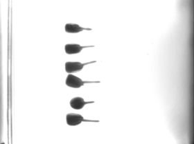

Select an image by double clicking the image of interest, it will be loaded into the viewer for the step 2. The input time series first image should look something like this:

The 100% magnification on our images lookes like this:
Press "Point" button in the viewer and click on tiplocations for every root. It should look something like this:

Start analysis by clicking "Track root tips".